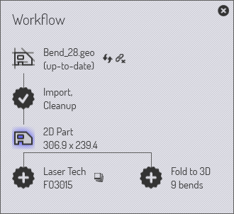
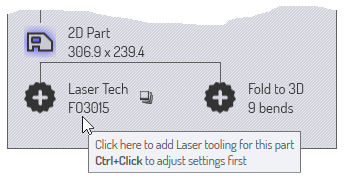
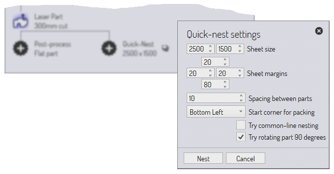
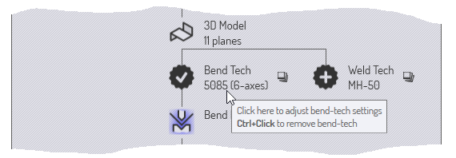
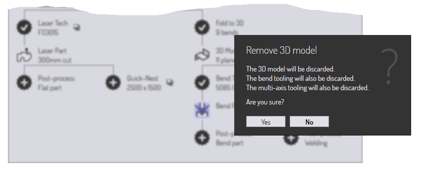
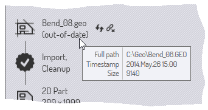
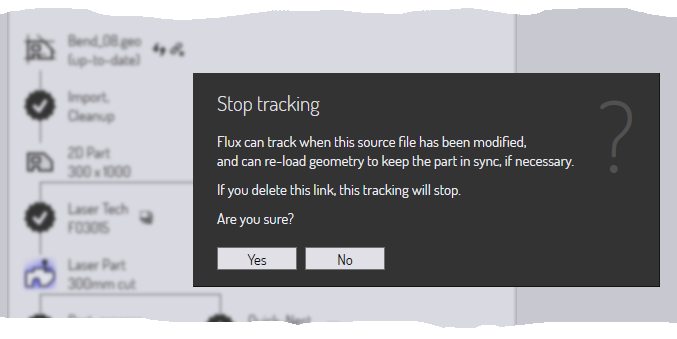

Workflow dílu
Vzhledem k tomu, že TecZone Bend má mnoho integrovaných modulů, existuje často více cest, kterými se mohou data o dílech pohybovat.
Příklad 1: při načítání dat plochých dílů (z GEO souboru nebo DXF souboru) můžete zvolit
-
Přiřaďte k dílu laserové nástroje, aby mohl být umístěn na plech a vyříznut spolu s ostatními díly.
-
Složte díl podél linií ohybu do 3D tvaru, aby mohl být zpracován a aby mohlo být vypočítáno pořadí ohýbání pro ohraňovací lis.
Příklad 2: při importu 3D plošného modelu (ze souboru IGES nebo STEP) můžete zvolit
-
Analyzujte povrchy a umístěte 5osé laserové CAM nástroje podél otvorů, které je třeba vyříznout.
-
Proveďte rozpoznání prvků, převedete plošný model na model plechu a rozložte jej do rovinného vzoru pro vyražení pomocí lisovacího stroje.
Panel Workflow

Panel Workflow je jako centrální rozbočovač, ze kterého můžete řídit všechny tyto pohyby. Když máte otevřený díl, můžete kdykoli vyvolat panel Workflow stisknutím klávesy W nebo kliknutím na ikonu Workflow v příkazovém řádku vlevo. Prozkoumejme panel Workflow; začněte importem 2D dílu s informacemi o ohybu (například soubor GEO). Po zobrazení panelu Workflow se v tomto okamžiku zobrazí následující:
-
Začali jsme s Bend_28.geo, importovali a vyčistili jsme jej, abychom vytvořili 2D plechový díl (jsou zobrazeny rozměry dílu)
-
Ve Workflow se pak nachází odbočka.
-
Mohli bychom přiřadit Laser Tech k danému dílu (to jednoduše znamená přiřazení laserových řezacích drah ke konturám dílu).
-
Můžeme složit plochý díl do 3D (detekováno 9 ohybů).
-
Rozbalování uzlů Workflow: Stádium 1
Klikněte na ikonu Laser Tech a přiřaďte k dílu laserové nastrojení. Uvidíte, že díl je okamžitě analyzován a je k němu přidáno laserové nastrojení. Poté klikněte na ikonu Složit do 3D, aby se plochý díl složil do 3D. Po provedení těchto kroků vypadá panel Workflow takto:

Jak ukazují anotace, v diagramu Workflow jsou různé typy uzlů.
-
Existují uzly Zobrazení dílů, které představují různé typy zpracování, které lze na dílu provést. Kliknutím na tyto uzly se díl přepne do tohoto pohledu a sada operací dostupných pro daný díl je reprezentativní pro tento pohled. Například v zobrazení Laserový díl můžete zobrazit a upravit laserové nastrojení přiřazené k dílu.
-
Mezi těmito zobrazeními můžete přepínat kliknutím na tyto ikony. Všechny tyto různé pohledy na díly mají také klávesové zkratky, které se zobrazí, když najedete myší na jednu z ikon pohledů. Naučte se tyto klávesové zkratky, abyste mohli rychle procházet Workflow. Takže po chvíli budete používat klávesové zkratky jako W B Esc k otevření panelu Workflow, přepnutí do pohledu ohýbání a poté zavření panelu Workflow.
-
Data dílů jsou mezi těmito uzly přenášena různými procesy a tyto procesy jsou v panelu Wworkflow znázorněny pomocí ikon ve tvaru 13cípé hvězdy. Například přecházíte z pohledu 2D díl na pohled Laser díl pomocí procesu Laser Tech (který analyzuje 2D díl a přiřadí k němu laserové nástroje).
Procesy, které jste dokončili, jsou označeny zaškrtnutím. Procesy, které jste ještě nedokončili (ale které jsou k dispozici), mají uvnitř zobrazený křížek. Kliknutím na tyto procesní uzly můžete proces dokončit.
Shrňme si, co můžeme vidět v této fázi Workflow našeho dílu:
-
Nyní jsou k dispozici 3 pohledy na díly (2D díl, laserový díl a 3D model, mezi kterými můžeme přepínat).
-
K dispozici jsou další čtyři procesy:
-
Mohli bychom provést následné zpracování plochého dílu (tím se vygeneruje report o plochém dílu, který by byl užitečný pro operátora laseru nebo děrovacího lisu; obvykle by obsahoval časy řezání laserem, nastavení nástrojů pro děrovací lisy a další speciální požadavky na nástroje pro tento díl).
-
Mohli bychom použít rychlé optimální rozmístění (rychlé optimální rozmístění je optimální rozmístění, které obsahuje pouze jeden typ dílu) a vygenerovat celý plech naplněný tímto dílem. To bylo možné použít k výrobě plechu pouze s tímto dílem nebo jako pomoc při rychlém odhadu nákladů nebo času pro tento díl.
-
Pro tento díl bychom mohli přiřadit Bend Tech (nastrojení ohraňovacího lisu).
-
Pro tento díl bychom mohli přidělit Weld Tech (nastrojení svařovacího robota).
-
Rozbalování uzlů Workflow: Stádium 2
Pojďme dále: Klikněte postupně na všechny dostupné procesní uzly a sledujte, jak se panel Workflow rozšiřuje. Pokračujte, dokud vám nezůstanou žádné uzly. Takto by to mělo vypadat po těchto procesech:

V tomto plně rozbaleném stavu panel Workflow usnadňuje okamžité přepínání mezi šesti různými zobrazeními dílu v různých procesních modulech. Můžete také prohlížet a přenášet nebo tisknout všechny různé výstupy generované těmito moduly. (Výstupy mohou být reporty, NC kód nebo časové studie).
Navigace v panelu Workflow
Panel Workflowu představuje mnoho informací a operací v kompaktní grafické podobě. Většinu času vám bude sloužit jako centrální uzel při práci s díly. Podívejme se blíže na některé ikony v panelu Workflow, abychom pochopili, jak je lze použít.
Dostupné procesní uzly
13cípá hvězda s + uvnitř představuje krok zpracování, který je nyní k dispozici. Může se například jednat o skládání 2D plochého dílu do 3D dílu nebo přiřazení laserového nastrojení. Přejděte myší nad takový uzel, aby se zobrazila bublinková nápověda vysvětlující, co uzel dělá.

To odpovídá typickému vzoru pro mnoho dostupných procesních uzlů. Kliknutím na uzel se proces spustí s výchozím nastavením. Ctrl+click na uzlu se nejprve zobrazí stránka nastavení a po kontrole/úpravě nastavení se proces provede. Například zde je to, co se zobrazí, když kliknete na Ctrl+click uzel Rychlé optimální rozmístění:

Zobrazí se nastavení rychlého optimálního rozmístění, které můžete před provedením optimálního rozmístění upravit.
Dokončené procesní uzly
Jakmile je proces dokončen, uzel se změní z dostupného procesního uzlu na uzavřený procesní uzel; symbol se změní na hvězdičku s zaškrtnutím uvnitř. V tomto okamžiku se změní možnosti dostupné pro daný uzel.

Toto je typická sada možností dostupných na dokončeném procesním uzlu. Kliknutím na uzel se znovu zobrazí nastavení procesu, takže je můžete upravit a zkusit zpracování znovu. Obvykle je také k dispozici možnost Ctrl+click pro smazání procesních dat. Pokud zvolíte tuto možnost, budete před provedením odstranění vyzváni k potvrzení. Například zde je to, co se stane, když kliknete na Ctrl+click uzel 3D model u plně zpracovaného dílu:

Pomocné příkazy
Mnoho uzlů má vedle sebe malé ikony, které poskytují pomocné příkazy. Tyto příkazy poskytují některé funkce související s tímto uzlem. Zde je několik příkladů.
-
Pomocné ikony u každého technologického uzlu obvykle umožňují vybrat jiný stroj a nástroj pro tento stroj.

-
Ikona vedle uzlu Rychlé optimální rozmístění umožňuje optimální rozmístění na plechu jiné velikosti.
-
Ikony v blízkosti výstupních uzlů umožňují zobrazit různé výstupy ze zpracovatelského uzlu (zprávy, NC programy nebo časové studie).

Sledování zdrojového souboru

Většina zpracování v TecZone Bend začíná importem CAD dat (2D nebo 3D). Díly TecZone Bend, které jsou vytvořeny z těchto CAD dat, mohou pokračovat ve sledování těchto zdrojových dílů. Po otevření dílu TecZone Bend může zkontrolovat, zda byl mezitím změněn původní soubor CAD, ze kterého byl vytvořen. Pokud ano, je daný díl nyní zastaralý a je to vidět v panelu Workflow.
-
Díl můžete obnovit kliknutím na pomocnou ikonu Obnovit díl vedle uzlu zdrojového dílu. TecZone Bend znovu importuje geometrii CAD a znovu sestaví díl.
-
Můžete se také rozhodnout přestat sledovat původní geometrii CAD. To může být užitečné například v případě, že původní soubor CAD existuje na vyměnitelném médiu nebo na vzdáleném disku, který nemusí být v budoucnu přístupný. Chcete-li to provést, klikněte na pomocnou ikonu přerušení odkazu poblíž uzlu zdrojového dílu. Zobrazí se výzva k zastavení sledování zdrojového souboru:

Souhrn
Zde je stručné shrnutí zásad v panelu Workflow.
-
Panel Workflow zobrazuje uzly představující různé pohledy na díly (například laserový díl, ohýbaný díl) a uzly představující různé procesy (například složit do 3D, přiřadit laserové nastrojení).
-
Procesní uzly, které jsou k dispozici (dosud neprovedené), jsou znázorněny jako 13cípé hvězdy se znakem uvnitř. Procesní uzly, které jsou již dokončeny, jsou znázorněny hvězdičkami se značkou uvnitř.
-
Kliknutím na dostupný procesní uzel se spustí daný proces s výchozím nastavením. Ctrl+click na dostupných procesních uzlech nejprve vyvolá editor pro úpravu nastavení procesu a poté proces spustí.
-
Kliknutím na dokončený procesní uzel můžete upravit nastavení procesu a znovu použít zpracování. Ctrl+click na dokončeném procesním uzlu odstraní zpracovávaná data.
-
Malé pomocné ikony poblíž uzlu procesu nebo uzlu částečného pohledu umožňují změnit některé důležité parametry daného uzlu procesu (např. cílový stroj nebo velikost plechu optimálního rozmístění).